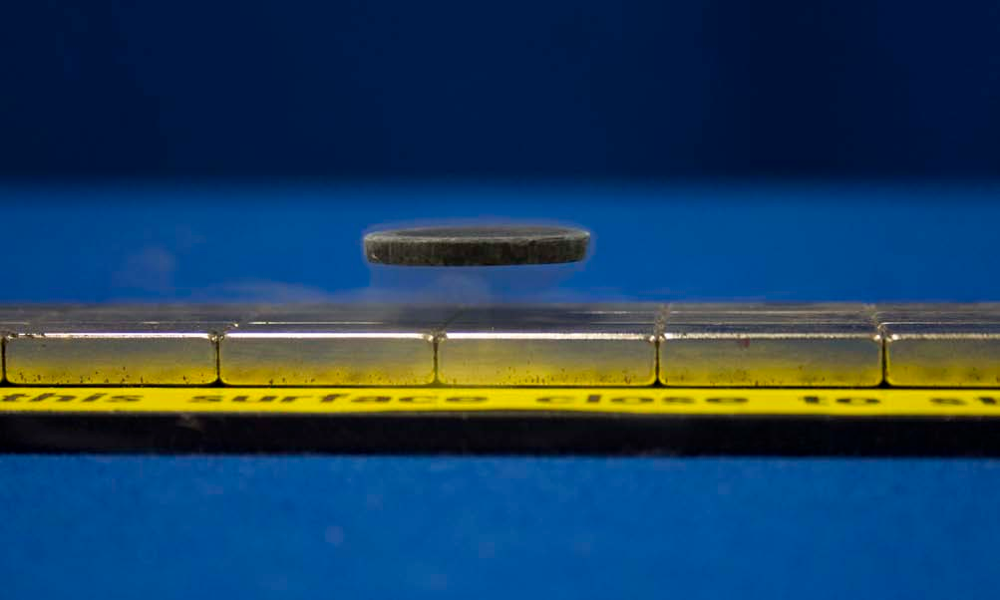
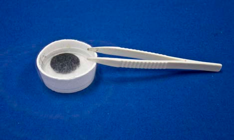
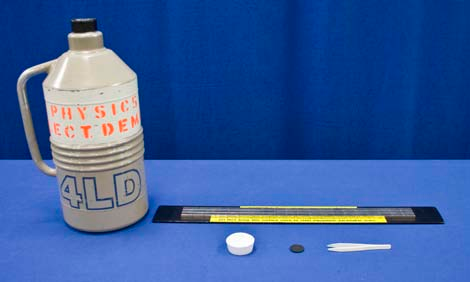

Concept
Liquid nitrogen at 77° K cools the wafer composed of bismuth strontium calcium copper oxide (BSCCO) until it becomes superconducting. In this state, the wafer will expel from its interior, the magnetic flux from the array of permanent magnets located beneath the wafer. This is the Meissner effect. In order to cancel the magnetic field within its interior, the superconductor must generate electric currents at its surface. These surface currents in fact create a mirror image of the permanent magnet and thus exert a repulsive force on the wafer, causing it to levitate.
Procedure
- Use the tweezers to place the superconducting disc in the Styrofoam dish.
- Poor enough liquid nitrogen in the Styrofoam dish to cover and cool the superconducting disc.
- Use the tweezers to gently place the superconducting disc floating above the magnets.
- Use the tweezers to gently push the superconducting disc side to side over sheet of magnets. Notice that itstops when reaching the edges of the magnetic sheet.
Equipment
- Liquid Nitrogen in Dewar
- Neodymium Magnet Sheet
- Styrofoam Dish
- BSCCO Superconducting Disc (Bismuth Strontium Calcium Copper Oxide)
- Non-Magnetic Tweezers